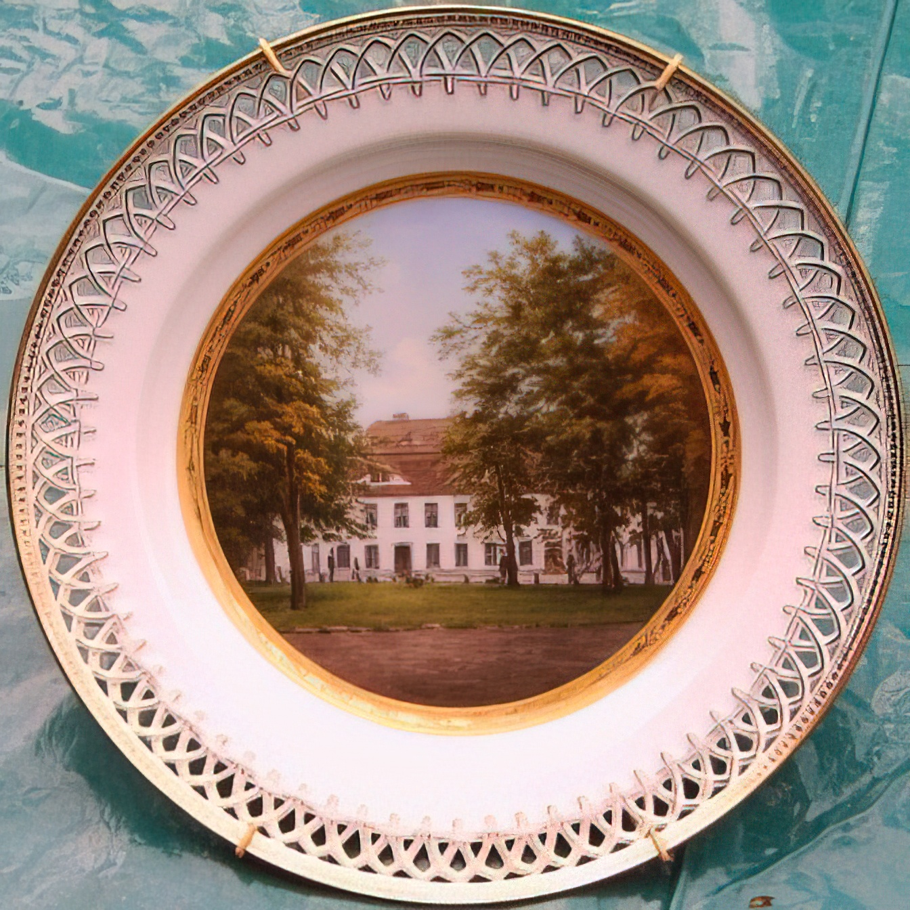
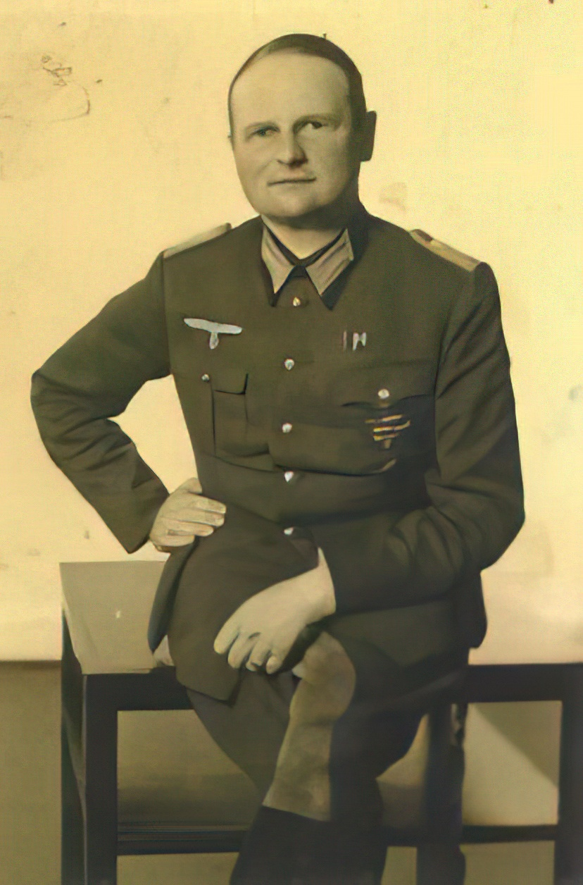
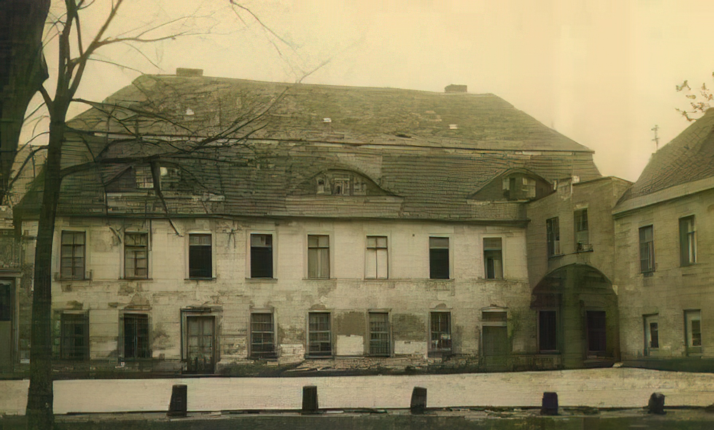
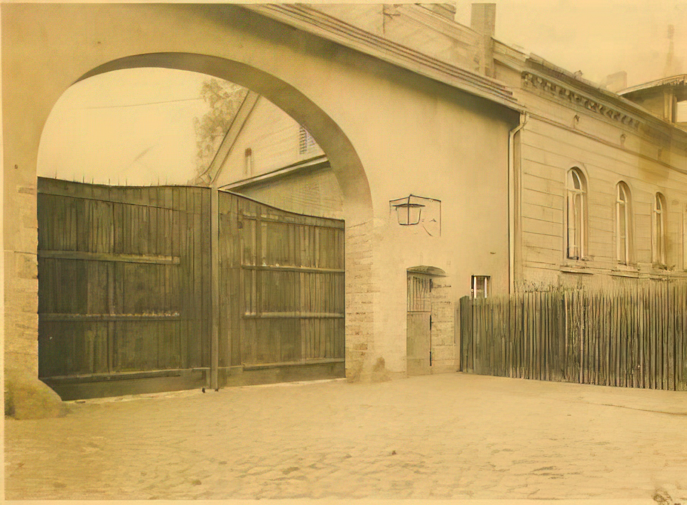
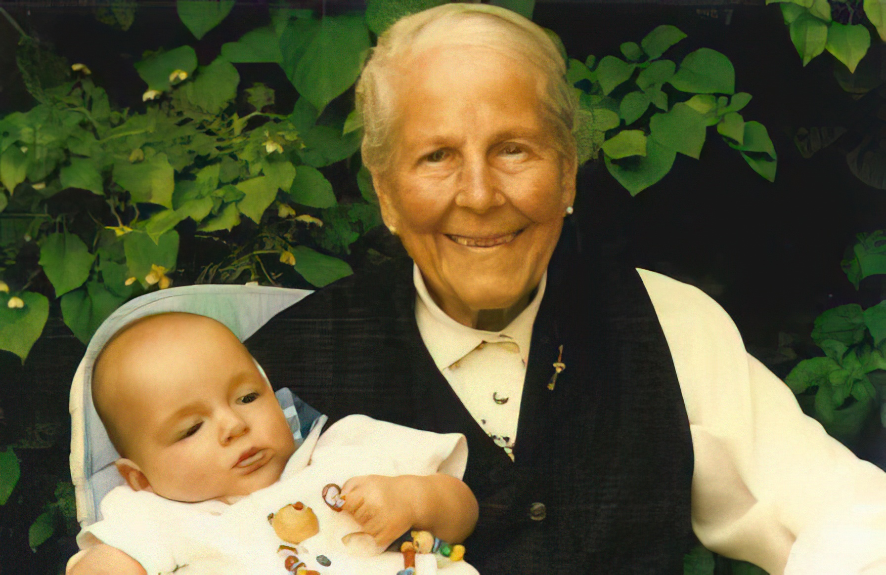
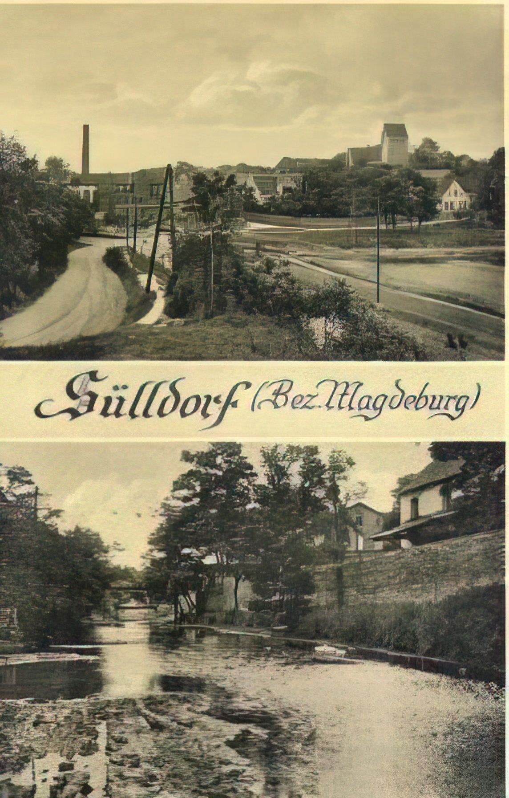
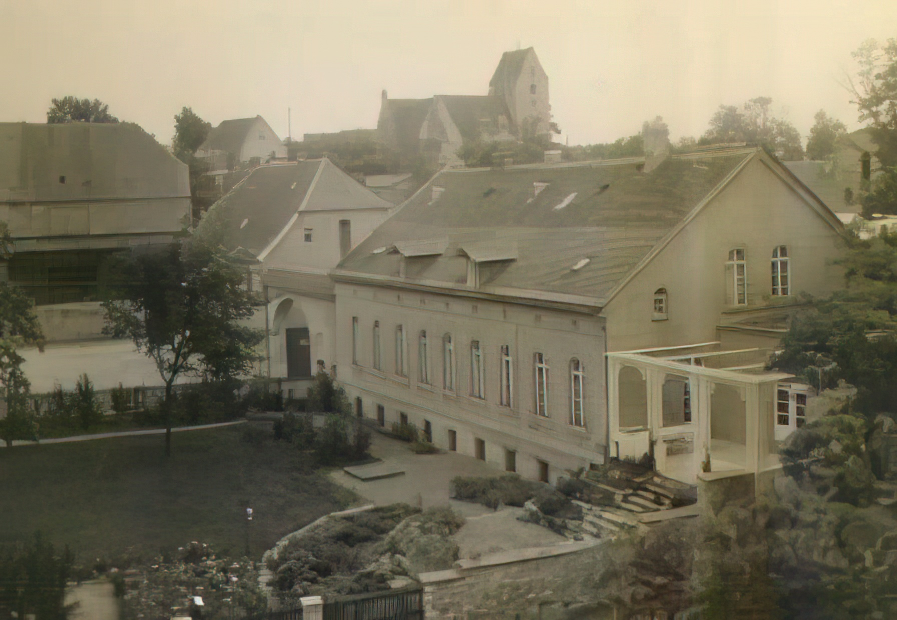

Magdeburger Börde · Familie von Alvensleben
Landwirtschaft auf den fruchtbarsten Böden Deutschlands — seit Generationen in Familienbesitz. Vom Schwarzerdeboden der Börde über die Wirren der Geschichte bis in die Gegenwart.
Der Betrieb heute
Das Rittergut Sülldorf liegt im Herzen der Magdeburger Börde, einer der ertragreichsten Ackerbauregionen Europas. Die tiefgründigen Schwarzerdeböden sind das Ergebnis von Lößablagerungen der letzten Eiszeit und jahrtausendelanger Humusbildung — ein Standortvorteil, den die Familie seit Generationen zu nutzen weiß.
Der Betrieb wird heute von Constantin und Joachim von Alvensleben geführt. Die operative Bewirtschaftung liegt bei Ulrich Schrader, einem erfahrenen Landwirt aus der Region, der den Betrieb im Auftrag der Familie führt. Angebaut werden vor allem Winterweizen, Winterraps und Zuckerrüben — die klassischen Kulturen der Börde.
Nach der Wiedervereinigung gelang es der Familie, ab 1991 Schritt für Schritt die historischen Flächen zurückzupachten und später zu erwerben. Heute umfasst der Betrieb rund 235 Hektar — etwas mehr als die Hälfte der historischen Fläche von rund 400 Hektar, die Wichard von Bredow 1933 in seiner Gutsbeschreibung dokumentierte.
Standort
Sülldorf liegt in der Gemeinde Sülzetal, Landkreis Börde, Sachsen-Anhalt — 16 km südlich von Magdeburg. Die Region verdankt ihre Fruchtbarkeit dem Löß, der während der letzten Eiszeit aus den Steppen Innerasiens vom Wind abgelagert wurde.
Der Löß wird von Schwarzerde bedeckt, der charakteristische Boden der Börde. Die Ackerkrume tritt in einer Mächtigkeit von 4 bis 8 Dezimetern auf, darunter folgt kalkhaltiger Löß. Obwohl seit über 1000 Jahren in Kultur, zeigt der Boden keine Verringerung seiner Produktivkraft.
Sülldorf hat eine günstige Verkehrslage an der Kreischaussee Osterweddingen–Bahrendorf. Die Kreisstadt Wanzleben liegt 10 km entfernt. Die Nähe zu Magdeburg bietet Zugang zu Industrie, Handel und — seit 2024 — zum Intel-Chipwerk-Standort.
Der Name Sülldorf zeigt, dass hier Salz zu finden ist. Die westlich des Ortes tretenden Solequellen gehören noch heute zu den stärksten Solen Deutschlands. Bis 1726 wurde hier Salz gesotten — es machte den Ort zeitweise zu einem wohlhabenden Marktflecken.
Geschichte
Die Geschichte des Gutes ist die Geschichte einer Familie, eines Bodens und der Brüche des 20. Jahrhunderts. Von der Stiftung Ottos des Großen bis zur Rückkehr nach der Wiedervereinigung.
Otto I. der Große schenkt dem von ihm in Magdeburg gegründeten St. Moritz-Kloster — an dessen Stelle heute der Magdeburger Dom steht — neben anderem auch Sülldorf. In alten Urkunden erscheint der Name auch als Soldorp, Soltdorp und Süldorp. 1299 beginnt unter Erzbischof Burchard die systematische Ausbeutung der Salzlager.
Spätestens seit 1527 ist die Familie von Angern in Sülldorf ansässig. Sie gehört zur „adligen Pfännerschaft" von Groß Salze — den Besitzern der Salzsiedehäuser. Im Laufe der Zeit fasst sie mehrere Höfe zu den Rittergütern I, II und III zusammen: dem Edelhof und dem Fabrikhof. Zwischen beiden stand das Schloss.

Der letzte männliche Besitzer, der königlich preußische Staats- und Finanzminister Ludolf von Angern, bewährt sich in der napoleonischen Besatzung. Als einziger in Berlin verbliebener Minister verhindert er übertriebene Forderungen der französischen Militärverwaltung — ohne dabei das Vertrauen der Franzosen zu verlieren. Drei eigenhändige Schreiben König Friedrich Wilhelms III. bezeugen die Wertschätzung.
Nach dem Tod des Ministers waren bis auf zwei Töchter alle elf Kinder unverheiratet gestorben. 1885 fällt das Gut im Erbgang an Joachim von Alvensleben (1856–1932) aus Erxleben II — den jüngsten Sohn. Eine verwandtschaftliche Verbindung zwischen den Familien Angern und Alvensleben bestand seit dem Dreißigjährigen Krieg. Das Gut bleibt zunächst 67 Jahre lang an die Familie Schäper verpachtet.

Der Sohn des Erben, Joachim von Alvensleben (1899–1942), übernimmt das Gut mit nur 23 Jahren. Das Inventar wird mit einer Kolonne pferdebespannter Ackerwagen aus dem über 250 km entfernten Falkenberg bei Frankfurt/Oder herangebracht. Trotz der schwierigen Inflationszeit gelingt es ihm, die Erträge so weit zu steigern, dass 1937 bereits ein Waldbesitz in der Altmark zugekauft werden kann.

Das ehrwürdige Herrenhaus aus dem 18. Jahrhundert mit schwerem Mansarddach muss wegen zunehmenden Verfalls abgerissen werden. Gobelins hatten das Innere geschmückt; der Saal besaß gemalte Tapeten, die ringsum den Golf von Neapel darstellten — eine Erinnerung daran, dass man vor Erfindung der Eisenbahn fast jeden Winter in eigener Kutsche von Sülldorf zum Vesuv zu reisen pflegte.

Joachim von Alvensleben fällt am 5. Juli 1942 bei Smolensk. Seine Frau Ingeborg, geb. von der Osten, bewirtschaftet das Gut allein weiter. 1945 wird die Provinz Sachsen sowjetisch besetzt, das Gut im Zuge der „Bodenreform" enteignet. Die Familie wird am 1. Januar 1946 durch die Sowjetische Militärregierung aus dem Landkreis verwiesen und flieht über die grüne Grenze nach Schöningen bei Braunschweig.

Nach der Wiedervereinigung beginnt ein zähes Ringen mit der Treuhand. Dank der von der Mutter bei der Flucht geretteten Grundbuchauszüge kann Schritt für Schritt Beweis angetreten werden. Am 1. Oktober 1991 werden erste Flächen gepachtet — die Pachtverlängerung muss zunächst Jahr für Jahr neu erkämpft werden. Joachim von Alvensleben (genannt „Acki") kauft Flächen zurück und baut den Betrieb wieder auf. Heute führen sein Sohn Constantin und sein Enkel Joachim den Betrieb gemeinsam.
Historische Aufnahmen


Kontakt
Wir freuen uns über Ihr Interesse an unserem Betrieb, an der Geschichte Sülldorfs oder an einer Zusammenarbeit. Nutzen Sie gerne das Kontaktformular — wir melden uns zeitnah bei Ihnen.
Ihre Daten werden vertraulich behandelt und nicht an Dritte weitergegeben.